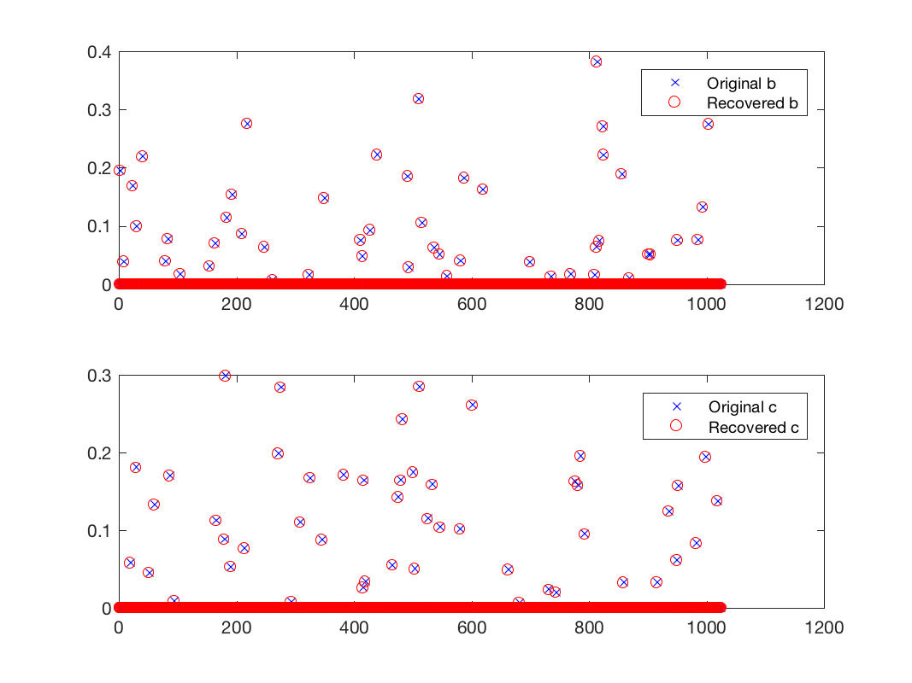

DEMO_PIERRE - Demo to solve a particular l1 l2 problemDescriptionThe problem can be expressed like this
\begin{equation*}
\operatorname{arg\,min}_{c,b} \|s - \Psi c - \Phi b\|^2 + \mu_1 \|c\|_{1} + \mu_2 \|b\|_{1}
\end{equation*}
Where s are the measurements, \(\Psi\) the Fourier matrix and \(\Phi=\Phi*M\) with \(M\) a diagonal matrix with \(+1,-1\) random values. We will use generalized forward backward to solve this problem. The gradients of
\begin{equation*}
\| s - \Psi c - \Phi b \|^2
\end{equation*}
are
\begin{equation*}
\nabla_{c}f(c,b) = 2 \Psi^* (\Psi c + \Phi b - s)
\end{equation*}
\begin{equation*}
\nabla_{b}f(c,b) = 2 \Phi^* (\Psi c + \Phi b - s)
\end{equation*}
In this code the variable \(b\) and \(c\) will be stack into one single vector of size \(2N\) Results

Results of the reconstruction
The support of the signal is recovered.
This code produces the following output: UnLocBoX version 1.7.3. Copyright 2012-2015 LTS2-EPFL, by Nathanael Perraudin FB_BASED_PRIMAL_DUAL Rel primal: 5.418511e-07, rel dual 8.854843e-05, it = 147, REL_NORM_PRIMAL_DUAL |